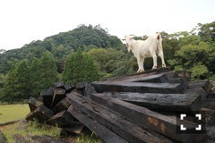
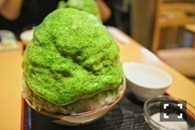

| 2016/10 22 Sat | 斎藤ちはる メイちゃん(オス)。 |
ちはるーむへようこそ！
今日、ヤギに会いました。
道路に面しているちょっとした草むらに
ぽつんといました。
ヤギの、メイちゃん(オス)！
ひたすらずーーーーっと草を食べていて
こっちには見向きもせず。。
何の草が美味しいの？
と聞いてたんだけどなぁ。
父母と行ったお蕎麦屋さんの方が飼ってるみたい。

凛々しい...！！
多分食べるのに飽きて登ったんだと思うけど
なんてフォトジェニック。
素敵な写真を撮らせてくれて
ありがとうメイちゃん( ◦˙ ˙◦ )
-------------------------♡
◎ChihaFood

大学の仲良しのお友達と食べてきました◎
しもきた茶苑大山さんの
かき氷の微糖抹茶！
ミルクに、白玉トッピングしたよ〜
秋も深まってきて肌寒いけど、
どうしてもここのかき氷が
食べたくて食べたくて
たまらなかったので
やっと行けてとても嬉しかった\( ˆ ˆ )/♡
開店時間には物凄い人が並んで
中々入れないんだけど
閉店間際に行ったら空いていたので
ゆっくりのんびり食べられました！
本当に美味しすぎて衝撃が走りました。
美味しいね〜幸せだね〜って
言いながらぱくぱく食べたよ( ◦˙ ˙◦ )
また行きたいと思います！
-------------------------♡
♬ ChihaMusic
「Wake up」KANA-BOONさん
曲の走り抜けていくような
爽快感が好き！
歌詞は聞いてるだけで勇気が湧いてくるような
でも何かを考えさせられるような。
朝の何かが始まる、
何かを始めようとする、
ワクワク感も感じる。
"目を覚ませ あの日心に誓ったことを忘れるな
君の言葉を解き放て 生まれ変わったなら
誰もが眠った街に
新しい朝の産声を届けるのさ"
決意と力強さが素敵！
明日は個別握手会ですね(o^^o)
皆さんに会えるのを
皆さん以上に楽しみにしていました◎
素敵な時間を過ごしましょう！
おやすみ〜
斎藤ちはる